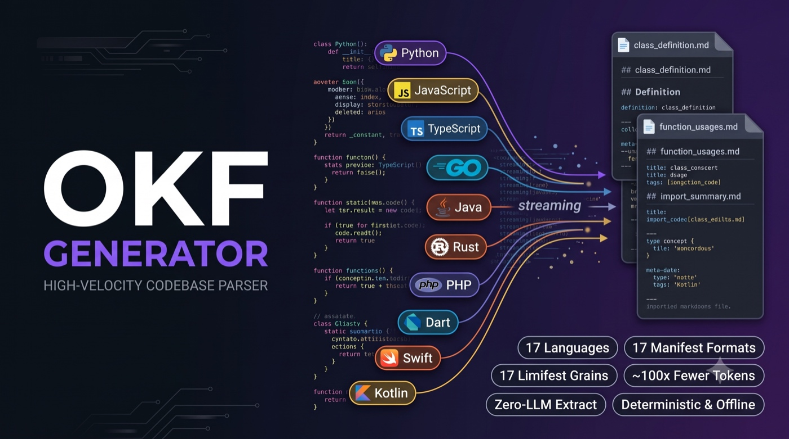
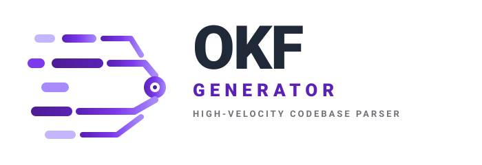

The knowledge layer
for AI coding agents
Turn any repository into structured, agent-ready knowledge. Local or remote — 18 languages, zero LLM required.
[perf] instrumentation
Full performance story
Works with the agents you already use
The Architectural Paradigm Shift
Why Traditional AI Context Fetching is Costing You a Fortune
Vector databases (RAG) lose source code syntax structures, while full-file loading triggers model memory starvation. okf-generator offers a deterministic middle-ground.
Naive File Loading & Semantic Vector Slices
- No call hierarchy tracking: Vectors chunk code raw, shredding class context and missing how methods connect.
- Heavy API bill overhead: Feeding entire class files (30K+ tokens) into the LLM just to get one method signature.
- SLM memory choke: Local models like Llama 8B or Phi-3 can't process massive code windows. They forget context or run out of memory.
AST Extraction + Deterministic Cross-Linking
- Full AST graph mapping: Captures exact callers, callees, parameters, types, and dependencies automatically.
- Surgically tiny payloads: Feeds agents highly dense 300-token summaries containing explicit reference signatures.
- Unlocks local LLMs: Tight context requirements fit into local SLM memory instantly, allowing laptops to achieve cloud-like results.
How It Works
Three steps to a smarter agent
From source code to structured knowledge graph in minutes. No LLM required.
Scan your codebase
tree-sitter AST parsers extract every function, class, module, and dependency across 17 languages with full signatures and docstrings.
Retrieve any concept
Exact-symbol lookup returns full concept cards — signature, parameters, callers, callees — in milliseconds. Zero embeddings, zero RAG.
Integrate with any agent
One command installs okf-generator into Claude Code, Cursor, Copilot, Windsurf, Cline, or OpenCode with auto-trigger rules.
Architecture
From source code to AI agent in one pipeline
Deterministic extraction with optional enrichment layers. Zero LLM by default — add LSP and LLM when you need them.
Enterprise Capabilities
Packed with Features Built for Production Systems
Everything you need to compile codebases into structured metadata instantly ingestible by any AI agent.
Serve any GitHub repository instantly
No clone. No setup. No manual indexing. One command clones, builds the knowledge bundle, and launches the server.
- Pin to any branch, tag, or commit with
@ref - Persistent cache at
~/.cache/okf/repos/ -
--updatere-fetches,--generateauto-builds - Perfect for MCP configs — point agents at any public bundle
AST Multi-Language Parsers
Native Tree-Sitter + stdlib parsing across 18 languages (Python, Rust, Go, JS, TS, Java, C#, C, C++, Swift, Ruby, Kotlin, SQL, YAML, PHP, Dart, Scala, Julia) to identify classes, structures, and functions.
Cross-Reference Linker
Resolves imports, call sites, and inheritance dependencies into graph edges. LSP enrichment upgrades this with compiler-accurate resolution via okf enrich --lsp.
LSP-Powered Call Graphs
Taps local language servers (pyright, gopls, rust-analyzer) for compiler-accurate caller/callee resolution. Resolves interfaces, dynamic dispatch, and external dependency traces — zero token cost.
Manifest Dependency Scanners
Scans and cross-indexes 17+ configuration manifests (Cargo.toml, package.json, requirements.txt, build.gradle, go.mod, Mix, Gemfile) to map libraries.
Domain Classification
Re-classify YAML concepts using data-driven rules. Built-in Crossplane support (XRD, Composition, Claim, ProviderConfig). Custom domains via --domain-rules.
Native MCP Server Integration
Exposes code concepts natively as tools via the Model Context Protocol. Cursor, Claude Desktop, and Cline can explore, search, and parse code automatically.
Fine-Tuning Dataset Generator
Extracts high-fidelity Instruction Pairs (okf pairs) from AST nodes to train custom private coding SLMs tailored strictly to your architecture.
Interactive Visual Dashboard
Generates beautiful, search-enabled 2D interactive graphs of your codebase structure. Great for human onboarding, audits, and code architecture mapping.
Language Coverage
18 languages, modular parsers
Each language lives in its own parser file. Adding a new language is a self-contained tree-sitter grammar mapping — no core changes.
Plus 22 manifest formats: requirements.txt · pyproject.toml · package.json · Cargo.toml · go.mod · pom.xml · Gemfile and more.
Agent Integration
One command per agent
okf install writes the exact rules, instructions, and commands each agent needs. No manual configuration.
Claude Code
Auto-triggers on 'index my codebase'
Cursor
Writes .cursorrules — auto-loaded
GitHub Copilot
Writes copilot-instructions.md
Windsurf
Writes .windsurfrules — auto-loaded
Cline
Writes .clinerules — auto-loaded
OpenCode
Adds /lookup command + MCP server
MCP
11 tools via Model Context Protocol
All Agents
Install for every agent at once
Register MCP server: okf mcp --install · Full integration guide →
Enrichment & LSP
Go deeper when you need it
Four tiered LLM modes + deterministic LSP call-graph enrichment. All are resumable — interrupt and rerun freely.
LSP Call Graph
Compiler-accurate caller/callee resolution via local language servers. Zero token cost. 4 servers: pyright, gopls, rust-analyzer, typescript-language-server.
Base Enrichment
Improves descriptions and docstrings with Google-style formatting. Does not require source body — works on existing bundles.
Deep Enrichment
Adds usage examples, side effects, security notes, and complexity estimates. Requires source body for full context.
Security Audit
Audits the bundle for visible risk patterns — injection vectors, auth bypasses, unsafe deserialization. Flags risks with remediation hints.
Full Enrichment
All tiers plus semantic related-links across concepts. Best for training data generation and comprehensive architectural review.
Comprehensive, Elegant CLI Toolkit
Scan, serve, diff, and visualize — from local directories or remote git repos. One binary, zero config. okf serve https://github.com/user/repo.git@main --generate
[2/4] Parsing Tree-Sitter AST nodes for method definitions...
[3/4] Resolving cross-references & library import matches...
[4/4] Optional LLM enrichment: Enhancing method docstrings (Deep Mode)...
✓ Code context compressed by 88.4% (avg. concept size 320 tokens).
CLI Reference
20 commands, full workflow
From initial generation to production CI/CD. Every command has a --help flag with full options.
| Command | Usage | Description |
|---|---|---|
| Generation & Enrichment | ||
| generate | okf generate [src] [out] [--enrich] | Scan codebase — tree-sitter AST extraction (auto-detects project root) |
| update | okf update [src] [out] [--watch] | Incremental re-scan — SHA256 manifest, edge-diff, only changed files |
| enrich | okf enrich [--lsp] [--llm] [--mode] | LSP call-graph (deterministic) + LLM enrichment (4 modes) |
| lsp | okf lsp [status|resolve|map] | Inspect available language servers (pyright, gopls, rust-analyzer, typescript) |
| Browsing & Q&A | ||
| lookup | okf lookup | Instant symbol concept retrieval (zero LLM) |
| ask | okf ask | AI-powered Q&A about your codebase (requires LLM) |
| diff | okf diff | Compare two bundles — added/removed/changed concepts |
| pairs | okf pairs | Export training pairs for fine-tuning |
| summarize | okf summarize | Regenerate SUMMARY.md from existing bundle |
| Visualization & Serving | ||
| visualize | okf visualize | Generate interactive D3 force-directed graph |
| serve | okf serve [dir|git-url] [--generate] [--port] | Browse bundle via local HTTP server. Supports git URLs + auto-generate |
| dashboard | okf dashboard | Launch FastAPI live bundle browser + graph |
| Integration & MCP | ||
| install | okf install [claude|cursor|copilot|…] | Write agent integration rules/configs |
| mcp | okf mcp | Start MCP server with 11 agent tools |
| agent | okf agent | Interactive REPL with persistent sessions, slash commands |
| config | okf config [key=value] | View or set configuration in .okfconfig |
| init | okf init [dir] [--quick] | Interactive bundle setup wizard |
| domains | okf domains [list|validate | Manage domain classification rule sets |
| migrate | okf migrate | Convert bundle between schema versions |
| plugin | okf plugin [list|install|uninstall] | Manage parser plugins |
Developer Workflow
Why developers keep switching
Same question, two workflows. Spot the difference.
Without OKF
With OKF
Comparison
okf-generator vs the alternatives
How deterministic AST extraction compares to RAG and naive file loading for code context retrieval.
| Capability | okf-generator | RAG / Vector Search | Read Whole File |
|---|---|---|---|
| Exact symbol retrieval | ✓ Precise AST lookup | ~ Approximate (chunk similarity) | ⚠ Manual scan |
| Token cost per lookup | ✓ ~140 tokens | ~ Varies by chunk strategy | ✗ 14,000+ tokens |
| Cross-reference edges | ✓ Calls / called-by / imports | ✗ Not supported | ✗ Not supported |
| Offline / no API key | ✓ Fully offline | ✗ Needs embeddings API | ✓ Offline |
| Dependency manifest parsing | ✓ 17 formats | ✗ Not designed for this | ✗ Manual |
| Search speed | ✓ ~3-4ms (indexed) | ~ 200-500ms (embed + search) | ⚠ Manual (seconds+) |
| CI/CD integration | ✓ Built-in GitHub Action | ✗ Custom pipeline required | ✗ N/A |
| Training data export | ✓ Built-in JSONL pairs | ✗ Not a feature | ✗ Not a feature |
| Context compression | ✓ ~97% reduction | ~ Varies by chunk strategy | ✗ 0% (full file) |
| Setup complexity | ✓ pip install + 1 command | ⚠ Vector DB + embedding pipeline | ✓ None |
Calculate Your AI Context API Savings
AI coding agents query LLM APIs dozens of times daily. Because they lack local repository indexes, they read massive files repeatedly.
Drag the sliders to see how much your engineering team can save in raw API token expenditures by deploying deterministic okf-generator structures.
Calculated assuming an average raw codebase context load of 45K tokens (naive) versus 1,200 tokens using OKF structured AST lookups.
{
"mcpServers": {
"okf-generator": {
"command": "okf",
"args": [
"mcp",
"/Users/username/WSpace/my_project/okf_bundle",
"--port",
"4567"
]
}
}
}
Instantly Link Your Codebase Into IDE Agents
The Model Context Protocol (MCP) allows client LLMs to invoke external scripts as specialized tools.
By running okf mcp, you instantly deploy an offline-first MCP server that exposes code definitions, dependencies, and structure maps. Now your agent in Cursor or Claude desktop doesn't guess filenames; it queries your AST-parsed database directly.
CI/CD Automation
Keep Your Knowledge Graphs Always Up To Date
Automate knowledge graph generation on every commit or merge request to ensure your developers and AI agents are always operating on the absolute source of truth.
# .github/workflows/okf-bundle.yml name: okf-pipeline on: push: branches: [ main, develop ] jobs: build: runs-on: ubuntu-latest steps: - uses: actions/checkout@v4 - name: Set up Python uses: actions/setup-python@v5 with: python-version: '3.11' - name: Install OKF Generator run: | pip install okf-generator - name: Compile AST Knowledge Bundle run: | okf generate ./src ./okf_bundle --enrich deep - name: Deploy Dashboard to GitHub Pages run: | okf visualize ./okf_bundle docs/index.html
Setup Guide
Adopt in Less Than 2 Minutes
Install the CLI, generate your code index, and plug it directly into your local IDE.
Install Package
Get the core package via pip, or download the lightweight binary shell runner directly.
pip install okf-generator
Scan Codebase
Generate your structural graph from your source repository instantly. Fully offline.
okf generate ./src ./bundle
Start MCP Server
Expose your knowledge bundle to Claude Code or Cursor via the local MCP protocol.
okf mcp ./bundle --port 4567
Questions & Answers
Frequently Asked Questions
Can't find the answer you need? Get in touch with our engineering team directly via GitHub.
Vector search (RAG) breaks code into arbitrary text chunks and generates embeddings. It is entirely unaware of code syntax. When an agent queries a function, RAG often returns irrelevant snippets while losing import pathways and parameters.
okf-generator is deterministic. It maps code structurally using AST Tree-Sitter parsing. This ensures the agent is given an exact mathematical representation of variables, methods, calls, and dependencies with zero hallucination.
No. By default, core extraction runs 100% offline using your local CPU to execute Tree-Sitter parse commands. No code or metadata is sent to any third-party cloud. Optional LLM enrichment can be enabled manually and is compatible with any self-hosted model or private enterprise API.
Our native Model Context Protocol (MCP) server allows okf-generator to connect instantly to major client shells including Cursor, Cline, Windsurf, Claude Code, and Claude Desktop. Developers can run simple okf install [agent] directives to initialize system configurations.
okf pairs translates your code\'s structural graph into clean training instructions (JSONL format). This enables you to fine-tune local Small Language Models (SLMs) such as Llama 3 8B or Phi-3 so they natively understand your proprietary engineering patterns, internal libraries, and naming conventions.
No. Core extraction (okf generate) is fully offline and deterministic — no LLM call is made unless you explicitly enable enrichment with --enrich. All 17 language parsers use tree-sitter or Python\'s stdlib AST and work completely air-gapped.
Start in 30 seconds
Install, generate your bundle, and do your first lookup. No API keys, no signup, fully offline.
pip install "okf-generator[llm]"
|
Dashboard support: pip install "okf-generator[dashboard]"